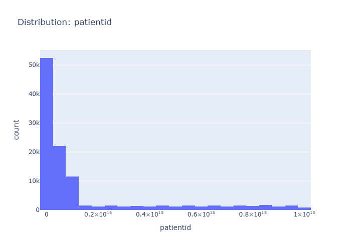
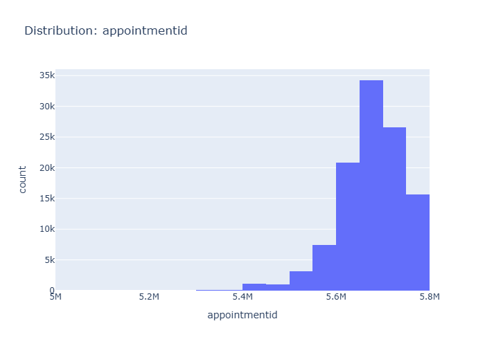
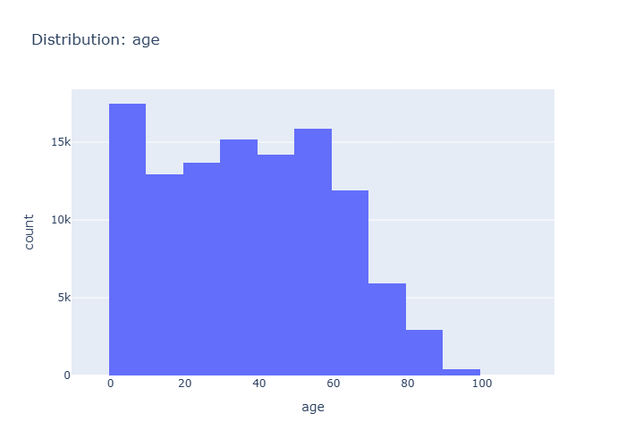
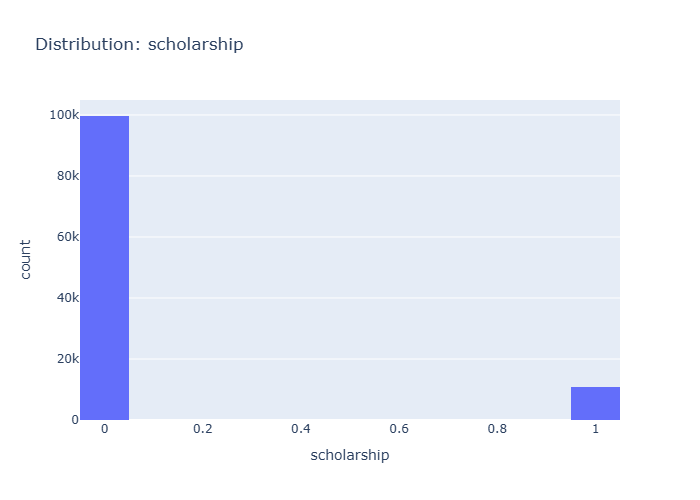
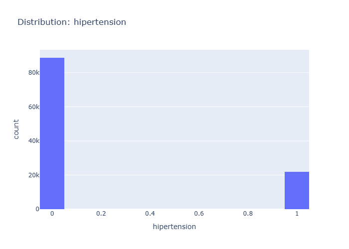
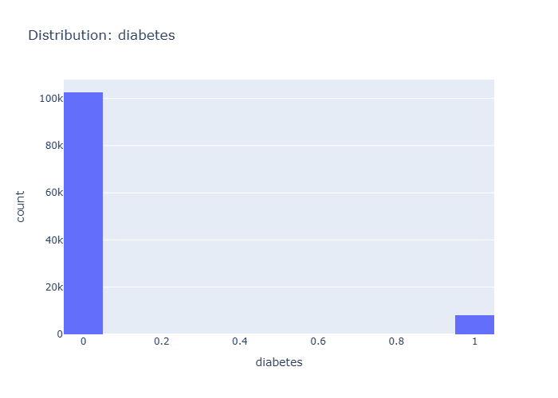
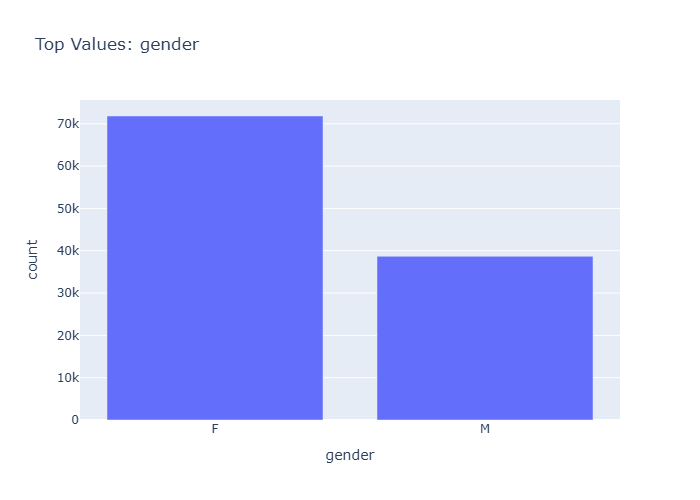
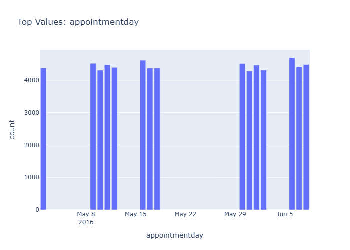
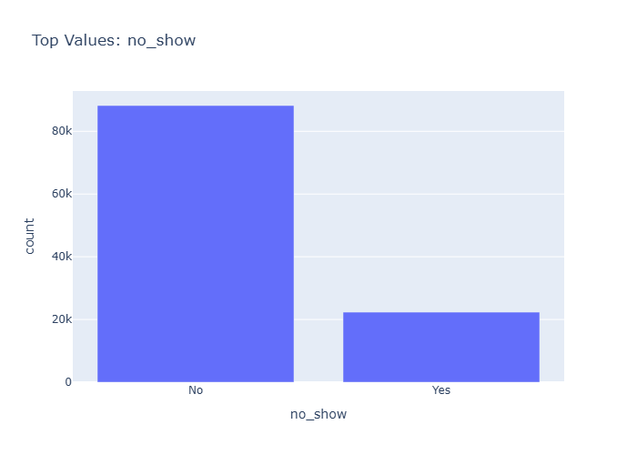
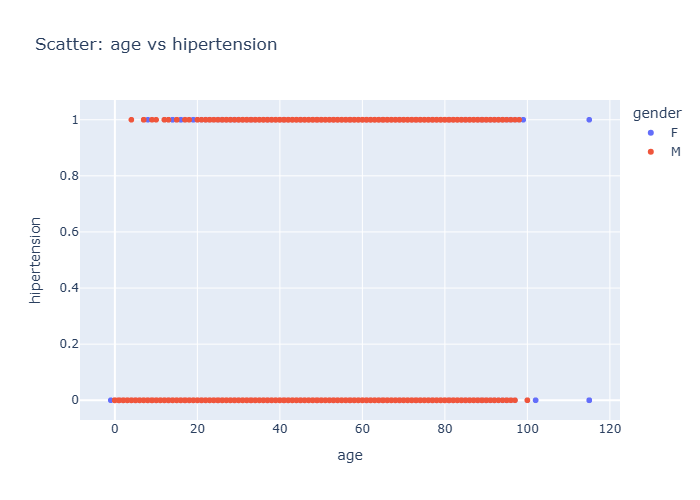

Final Data Insights
- Generated: 2026-05-14 13:07 UTC
- Model setting: google/gemini-2.5-flash-lite
- LLM-enabled: yes
- Individual insight files: 12
Dataset Context
- Rows: 110527
- Columns: 14
- Numeric columns: 9
- patientid: mean=147496265710394.06, std=256094920291739.09
- appointmentid: mean=5675305.12, std=71295.75
- age: mean=37.09, std=23.11
Consolidated Chart Insights
Overview Numeric Distributions
Insights: Overview Numeric Distributions

Data Insight
- The box plot reveals that 'patientid' has an extremely wide range of values, with a median close to zero and a very high upper whisker. All other numeric columns show very small, tightly clustered distributions, with medians at or near zero.
Analysis Insight
- The 'patientid' column's distribution is drastically different from all others. This suggests 'patientid' and 'appointmentid' are likely identifiers, not quantitative variables, while 'age', 'scholarship', 'hipertension', 'diabetes', 'alcoholism', 'handcap', and 'sms_received' are binary or categorical, represented numerically.
Caveat
- The 'patientid' and 'appointmentid' columns are extremely large and likely contain IDs rather than measurable quantities. Their distributions distort the overall view. Analysis should focus on the other columns, treating them as categorical or binary indicators.
Correlation Heatmap
Insights: Correlation Heatmap

Data Insight
- Age shows a moderate positive correlation with hypertension (0.50) and diabetes (0.29). There's a weaker positive correlation between hypertension and diabetes (0.43). SMS received has a notable negative correlation with appointmentid (-0.26).
Analysis Insight
- The heatmap reveals moderate correlations between age and chronic conditions like hypertension and diabetes, suggesting potential links. The negative correlation between SMS received and appointmentid could indicate SMS reminders are associated with fewer missed appointments.
Caveat
- Correlation does not imply causation. Other unmeasured factors may influence these relationships, and the data might have missing or miscoded values for certain conditions or demographics.
Distribution Patientid
Insights: Distribution Patientid

Data Insight
- The histogram displays the distribution of patient IDs. A large number of patient IDs fall within the 0 to 20,000 range, with a sharp decrease in counts for higher patient ID values. This indicates a skewed distribution, with most counts concentrated at lower patient ID values.
Analysis Insight
- The distribution shows a highly right-skewed pattern for patient IDs, suggesting that many appointments are associated with patients having lower IDs. The majority of patient IDs are clustered in the initial bins, with very few instances observed for larger patient IDs.
Caveat
- The patient IDs are very large numerical values, making it difficult to interpret their inherent meaning or any potential patterns without additional context on how they were generated or assigned. The observed distribution might be an artifact of the ID generation process rather than reflecting patient behavior.
Distribution Appointmentid
Insights: Distribution Appointmentid

Data Insight
- The histogram shows that the majority of appointment IDs are concentrated between 5.6M and 5.8M. There is a sharp increase in count around 5.6M, indicating a significant number of appointments in that range.
Analysis Insight
- The distribution of appointment IDs is skewed towards higher values, with a peak occurring in the 5.7M to 5.8M range. This pattern suggests that appointment IDs are assigned sequentially or in batches, with recent appointments having larger IDs.
Caveat
- The chart displays a distribution of appointment IDs, which may not directly reflect appointment frequency or patient behavior. ID assignment logic and potential duplicates could influence the observed distribution.
Distribution Age
Insights: Distribution Age

Data Insight
- The distribution of patient ages shows a peak for ages between 0 and 10, with another substantial peak around 50-60 years old. The counts decrease significantly for older age groups, with very few patients above 90.
Analysis Insight
- The histogram reveals a bimodal distribution of age, suggesting two primary patient groups. The high frequency of younger patients and a secondary peak in middle age might indicate different healthcare needs or access patterns. Further investigation into these groups is warranted.
Caveat
- The age data might be skewed by how ages are recorded (e.g., rounded, or collected at different points). The distribution does not account for factors like appointment scheduling biases or specific health conditions influencing age representation.
Distribution Scholarship
Insights: Distribution Scholarship

Data Insight
- The histogram shows a highly imbalanced distribution for the 'scholarship' variable. Approximately 100,000 records have a scholarship value of 0, while only around 12,000 records have a value of 1, indicating that most patients in the dataset do not have a scholarship.
Analysis Insight
- The 'scholarship' variable appears to be binary, likely representing 'no scholarship' (0) and 'has scholarship' (1). The overwhelming majority of patients are in the 'no scholarship' category, suggesting that financial aid is not a common attribute among this patient population.
Caveat
- The chart displays raw counts and does not account for potential data quality issues or the definition of 'scholarship'. It's unclear if the value '1' represents all types of scholarships or a specific program, and the data's recency is unknown.
Distribution Hipertension
Insights: Distribution Hipertension

Data Insight
- The histogram shows a clear bimodal distribution for hypertension status. Approximately 85,000 individuals have a hypertension value of 0 (likely indicating no hypertension), and around 21,000 individuals have a hypertension value of 1 (likely indicating hypertension).
Analysis Insight
- The majority of the patient population in this dataset does not have hypertension. The prevalence of hypertension appears to be significantly lower than the absence of it, with a ratio of roughly 4:1.
Caveat
- The chart uses binary categories (0 and 1) for hypertension, which may oversimplify a complex medical condition. The dataset doesn't provide information on the source or accuracy of this hypertension data, nor does it account for potential confounding factors.
Distribution Diabetes
Insights: Distribution Diabetes

Data Insight
- The distribution of diabetes shows that the vast majority of patients in the dataset do not have diabetes (count close to 100k). Only a small fraction of patients have been diagnosed with diabetes (count around 10k).
Analysis Insight
- The dataset is heavily imbalanced concerning diabetes status. The number of patients without diabetes is significantly higher than those with diabetes, which is a crucial factor for any subsequent analysis or modeling.
Caveat
- The chart only shows the distribution of diabetes based on the recorded data. It does not account for undiagnosed cases or potential data entry errors, which could affect the true prevalence of diabetes in the population.
Category Gender
Insights: Category Gender

Data Insight
- The dataset contains a significantly higher number of female patients (approximately 70,000) compared to male patients (approximately 39,000).
Analysis Insight
- The distribution of patients by gender is uneven, with females being the predominant gender in the dataset. This could influence any subsequent analysis related to patient demographics.
Caveat
- The chart only shows counts for 'F' and 'M' genders. Other gender identities might be present but excluded or not captured in this dataset, leading to an incomplete representation.
Category Appointmentday
Insights: Category Appointmentday

Data Insight
- The chart displays appointment counts for several days in May and early June 2016. May 8th has the lowest count (around 2500) and May 29th has the highest (around 4500), with other days showing similar counts in the 4000-4400 range.
Analysis Insight
- Appointment volume appears relatively stable across most days shown, with a slight dip on May 8th and a peak on May 29th. This suggests consistent demand for appointments throughout this period, barring potential weekend or holiday effects not explicitly shown.
Caveat
- The chart only shows a limited number of specific appointment days. It does not account for the day of the week or potential external factors, such as holidays, that could influence appointment scheduling and no-show rates.
Category No Show
Insights: Category No Show

Data Insight
- The bar chart displays the counts of appointments where patients showed up ('No') versus those who did not ('Yes'). The 'No' category has a significantly higher count, approximately 85,000, while the 'Yes' category shows a count of around 22,000, indicating more patients attended their appointments than missed them.
Analysis Insight
- The data shows a clear imbalance in appointment attendance, with a majority of patients attending. This suggests that while missed appointments are a concern, the overall attendance rate is robust. Further analysis could explore factors influencing no-shows.
Caveat
- This chart presents raw counts and does not account for potential confounding factors such as appointment scheduling issues, patient demographics, or other external influences that might affect show-up rates. The data's representativeness and accuracy are also assumed.
Overview Scatter Age Vs Hipertension
Insights: Overview Scatter Age Vs Hipertension

Data Insight
- The scatter plot shows a distinct pattern: individuals with hypertension (hipertension=1) are clustered at higher ages, generally above 40. Conversely, those without hypertension (hipertension=0) are spread across a wider age range, including younger individuals.
Analysis Insight
- There appears to be a strong association between older age and the presence of hypertension. Most individuals in the dataset across various ages do not have hypertension, while hypertension cases are predominantly observed in older age groups.
Caveat
- This visualization does not account for other factors that could influence hypertension, such as lifestyle or pre-existing conditions. The data may also have limitations in capturing the full spectrum of health conditions across all age groups.